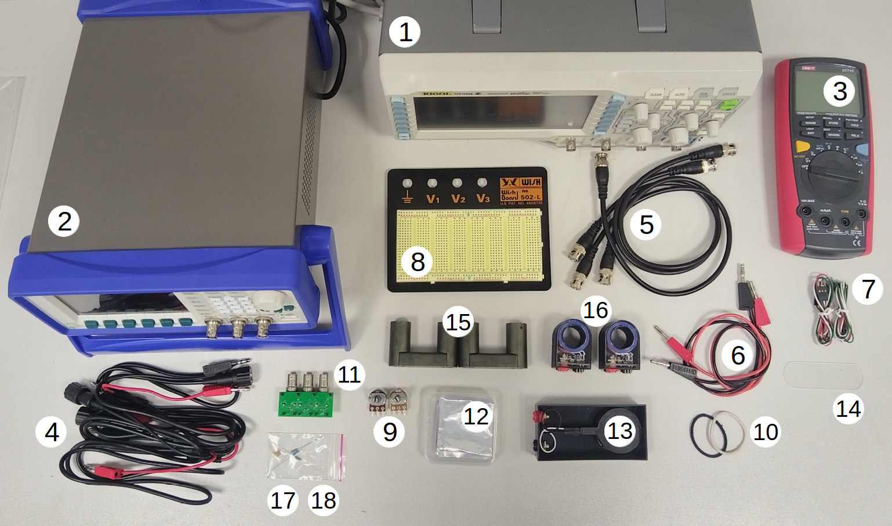
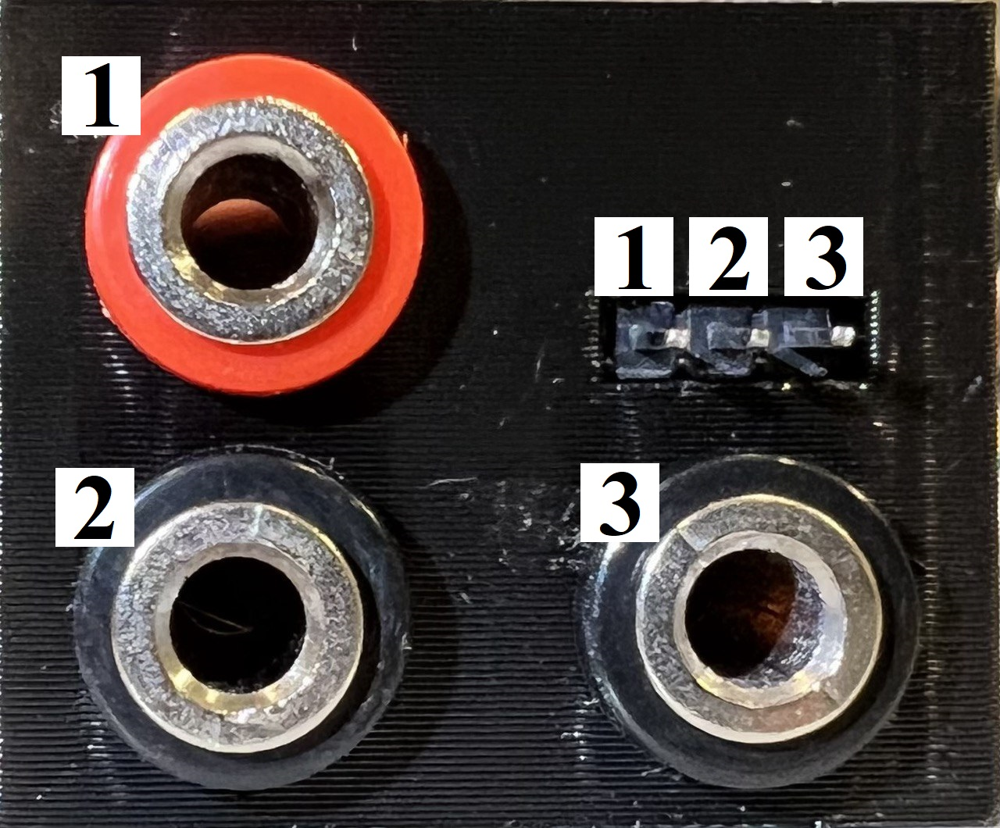
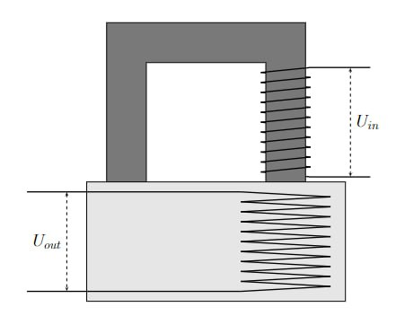
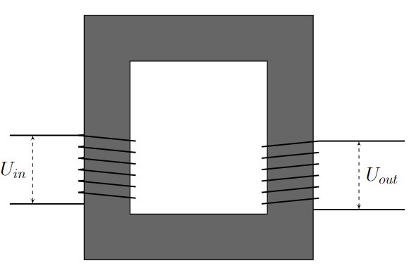
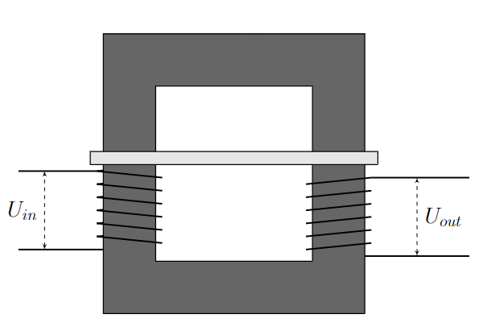
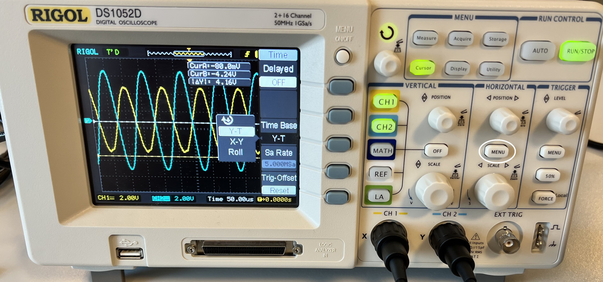
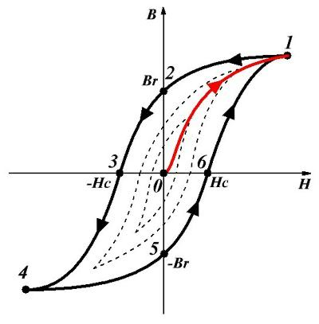
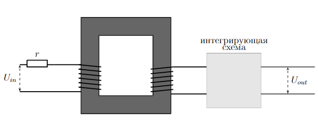

X24 (2024) — English translation

Oscilloscope AC signal generator Digital multimeter BNC-banana wires BNC-BNC wires Banana-banana wires DuPont male-female triple wire Breadboard Potentiometers ($1~кОм$ and $10~кОм$) Two rubber bands Triple adapter BNC board Pieces of foil thickness $50~мкм$, $100~мкм$, $200~мкм$, $300~мкм$ Block with built-in sensor coil Plastic spacer Two ferrite cores Coils A with number of turns $N_A=300\pm1$ and B with $N_B=200\pm1$ Capacitor nominal $(1.0\pm0.1)~мкФ$ Resistors nominal $(10.0\pm0.1)~Ом$, $(100\pm1)~Ом$, $(51\pm1)~кОм$
Note 1. In all work, the generator signal is sinusoidal with double amplitude $2U_0=12~В$ (note that the generator shows exactly double amplitude) and frequency $f_0=10~кГц$, unless otherwise stated.
Note 2. Use potentiometers only in points B2-B4.
Ferrites are compounds of iron oxide $\mathrm{Fe_2O_3}$ with more basic oxides of other metals, which are ferrimagnetic. Ferrites are widely used as magnetic materials in radio electronics, radio engineering and computer technology, since they combine high magnetic susceptibility ($\chi\gg1$) with semiconductor or dielectric properties. Ferrite under normal conditions has low electrical conductivity. Therefore, losses due to the presence of eddy currents in ferrite cores can be neglected unless otherwise stated. Handle ferrite cores with care, they are fragile!
Ferrite under normal conditions has low electrical conductivity. Therefore, losses due to the presence of eddy currents in ferrite cores can be neglected unless otherwise stated.
Handle ferrite cores with care, they are fragile!
As is known, alternating magnetic fields cause eddy currents in conductors. In turn, eddy currents generate opposing fields. In superconductors, eddy currents push the magnetic field completely outward. Ordinary metals do not have this property due to their finite conductivity and are therefore less effective at shielding magnetic fields. To describe the shielding of magnetic fields using aluminum foil, adopt the following model $$B=B_0e^{-\alpha{}d}{,}$$где $B_0$ – магнитное поле в отсутствии фольги, $B$ – величина магнитного поля, прошедшего через фольгу, $\alpha$ – постоянная затухания, $d$ – the thickness of the foil.
The correspondence between banana pins and pins is shown in the figure. Between the terminals $1$ and $2$ there is the coil itself, between the terminals $2$ and $3$ there is a resistor connected in series with it. You can also use resistors (18) instead.
The correspondence between banana pins and pins is shown in the figure. Between the terminals $1$ and $2$ there is the coil itself, between the terminals $2$ and $3$ there is a resistor connected in series with it. You can also use resistors (18) instead.

Note 3. In further paragraphs, the ohmic resistance of the coils can be neglected unless otherwise indicated. Place coil A on the ferrite core (as shown) and place it feet down on the block so that coil A is directly above the sensor coil built into the platform. Secure the core to the block using rubber bands.
Place coil A on the ferrite core (as shown) and place it feet down on the block so that coil A is directly above the sensor coil built into the platform. Secure the core to the block using rubber bands.

The transformer consists of several wire windings wound on a common core (magnetic core) made of a material with magnetic permeability $\mu\gg1$, where $\mu$ is determined by the expression $$\vec{B}=\mu\mu_0\vec{H}{,}$$ где $\vec{B}$ – вектор индукции магнитного поля, $\vec{H}$ is the magnetic field strength vector. The winding connected to the current source is called primary, and the other, connected to the load, is called secondary. For this part, consider coil A to be the primary winding and coil B to be the secondary winding. The current in the primary winding creates a flux that, due to the properties of the core, is practically not dissipated along the magnetic circuit. This flux induces a current in the secondary winding. Transformers are typically used to increase or decrease voltage amplitude and galvanically separate input and output electrical circuits (i.e., transfer a signal from one circuit to another without leaking current).
Arrange two U-shaped ferrite cores with two coils (as shown in the picture) and secure them with rubber bands. Using a generator, apply a sinusoidal signal $U_g(t)=U_0\sin2\pi{}f_0{}t$ with a frequency $f_0$ to the primary coil.
Arrange two U-shaped ferrite cores with two coils (as shown in the picture) and secure them with rubber bands. Using a generator, apply a sinusoidal signal $U_g(t)=U_0\sin2\pi{}f_0{}t$ with a frequency $f_0$ to the primary coil.

One of the characteristics of the transformer is the transformation ratio $m=\dfrac{U_{out,0}}{U_{in,0}}$, where $U_{in,0}$ and $U_{out,0}$ are the voltage amplitudes on the primary and secondary coils, respectively.
Now we close the secondary coil to the rheostat. We denote the resistance of the rheostat as $R$. Let us introduce $P_{пол}$ – the average useful power released at the rheostat, and $P_0$ – the time-averaged power of the generator. Operate at generator frequency $f_1 = 200~Гц$.
Transformer efficiency $\eta$ is defined as $\eta=\dfrac{P_{пол}}{P_0}$.
In point B4, the ohmic resistance of the coils should be taken into account. Let's analyze various sources of losses. The power $P_0$ supplied to the transformer is “decomposed” into useful power $P_{пол}{,}$, other joule losses in the coils and resistors $P_{\text{Дж}}$ and losses in the core $P_{серд}$. $$P_0=P_{пол}+P_{Дж}+P_{серд}$$
Let's analyze various sources of losses. The power $P_0$ supplied to the transformer is “decomposed” into useful power $P_{пол}{,}$, other joule losses in the coils and resistors $P_{\text{Дж}}$ and losses in the core $P_{серд}$. $$P_0=P_{пол}+P_{Дж}+P_{серд}$$
One coil First, consider a core with one coil through which current $I$ flows. The magnetic flux $\Phi{,}$ that the current creates in the ferrite core inside the coil is proportional to the current $I$ and the number of turns $N$. In addition, the flux depends on the geometric factor $g$, which is determined by the size and shape of the core, and the magnetic permeability $\mu$, which describes the magnetic properties of the core material. Thus, the magnetic flux $\Phi$ is given by the formula $$\Phi=\mu\mu_0{}gNI{.}$$ Считайте, что на катушку подаётся сигнал с угловой частотой $\omega$. Считайте, что $g$ for coils A and B are the same.
First, consider a core with one coil through which current $I$ flows. The magnetic flux $\Phi{,}$ that the current creates in the ferrite core inside the coil is proportional to the current $I$ and the number of turns $N$. In addition, the flux depends on the geometric factor $g$, which is determined by the size and shape of the core, and the magnetic permeability $\mu$, which describes the magnetic properties of the core material.
Thus, magnetic flux $\Phi$ is given by the formula
$$\Phi=\mu\mu_0{}gNI{.}$$
Consider that a signal with angular frequency $\omega$ is applied to the coil.
Consider that $g$ is the same for coils A and B.
Two coils Now consider a core with two coils. A ferrite core can be used to connect coils A and B to each other. In an ideal core, the magnetic flux will be the same for all cross sections, but due to flux leakage in real cores, the flux of the field produced by coil A through coil A and the flux of that field through coil B are related as follows: $$ \Phi_B=k\Phi_A,$$ где $k<1$ – так называемый коэффициент связи. Аналогично ток в катушке B , создаст поток $\Phi'_B$ через катушку B и $$ \Phi'_A =k\Phi'_B$$ через катушку A . Экспериментально проверено, что коэффициент $k$ не зависит от того, какая катушка взята в качестве первичной. Пусть катушка А является первичной катушкой, т.е. подключенной к генератору с синусоидальным напряжением $U_g(t)=U_0\sin2\pi{}f_0{}t$ (напомним, $N_A=300\pm1$). Consider a situation where no current flows through coil B. In all points of this part (except C13), the layout of the coils on the core is the same as in part B.
Now consider a core with two coils. A ferrite core can be used to connect coils A and B to each other. In an ideal core, the magnetic flux will be the same for all cross sections, but due to flux leakage in real cores, the flux of the field produced by coil A through coil A and the flux of that field through coil B are related as follows:
$$ \Phi_B=k\Phi_A,$$ где $k<1$ – the so-called coupling coefficient.
Similarly, the current in coil B will create a flux $\Phi'_B$ through coil B and
$$ \Phi'_A =k\Phi'_B$$
through coil A.
It has been experimentally verified that the coefficient $k$ does not depend on which coil is taken as the primary one. Let coil A be the primary coil, i.e. connected to a generator with sinusoidal voltage $U_g(t)=U_0\sin2\pi{}f_0{}t$ (recall $N_A=300\pm1$). Consider a situation where no current flows through coil B.
In all points of this part (except C13), the layout of the coils on the core is the same as in part B.
Now let current $I_B(t)$ flow through coil B.
A generally accepted way of describing the relationship between current and induced emf in a coil is to determine the coil's own inductance $L$ as follows: $$\mathcal{E}(t)=-L\dfrac{dI(t)}{dt}$$
If the secondary coil is short-circuited, the current in the primary coil will change. Let's denote it $I_P(t)$.
Coils A and B can be connected in series in two different ways: the two currents produced are either added or subtracted from each other.
Connect coils A and B in series so that the fluxes they create add up.
A thin plastic spacer inserted between the two cores significantly reduces the inductance of the coil. Assume $\mu_{пл}=1$ for the plastic spacer. The thickness of the gasket is $(1.20\pm0.02)~мм$. Consider that the presence of a plastic gasket has little effect on the pattern of magnetic lines, and their characteristic length inside the ferrite cores closed to each other is equal to $(24\pm1)~cm$.

Attention! For this part, you will need the X-Y mode on the oscilloscope. To enter this mode, press the MENU button, select Time Base and X-Y mode (see figure on the right).

Hysteresis is a property of systems whose response to the influence applied to them depends not only on their current state, but also on their “prehistory”. For example, if you stretch a rubber cord and then return it to its unstretched state, its length before and after stretching will be different. This is called elastic hysteresis. A similar phenomenon is observed in the case of a field in matter and is called magnetic hysteresis. It turns out that if the value of the field strength $H$ is periodically changed, the graph of the dependence $B(H)$ will not pass through the point $(0,0)$. In the figure, the dependence $B(H)$ for some fixed amplitude $H$ is highlighted in bold. When $H$ increases, $B$ changes along the trajectory $4-5-6-1$, when it decreases, along the trajectory $1-2-3-4$. This cycle is called a hysteresis loop. The dotted lines show the hysteresis loops for different amplitudes $H$. If you connect the extreme points for all the loops, you get some curve (curve $0-1$ in the figure), called the magnetization curve, it describes the relationship between $B$ and $H$ for a demagnetized sample first placed in an external field (line $0-1$). In this part of the problem, we will need to obtain the magnetizing curve of ferrite and use it to explore other magnetic properties of this material.
A similar phenomenon is observed in the case of a field in matter and is called magnetic hysteresis. It turns out that if the value of the field strength $H$ is periodically changed, the graph of the dependence $B(H)$ will not pass through the point $(0,0)$.
In the figure, the dependence $B(H)$ for some fixed amplitude $H$ is highlighted in bold. When $H$ increases, $B$ changes along the trajectory $4-5-6-1$, when it decreases, along the trajectory $1-2-3-4$. This cycle is called a hysteresis loop. Dashed lines show hysteresis loops for different amplitudes $H$.
If you connect the extreme points for all the loops, you get some curve (curve $0-1$ in the figure), called the magnetization curve, it describes the relationship between $B$ and $H$ for a demagnetized sample first placed in an external field (line $0-1$). In this part of the problem, we will need to obtain the magnetizing curve of ferrite and use it to explore other magnetic properties of this material.

For this part, use two ferrimagnetic core coils (apply signal to coil A and remove signal to coil B). Use the highest possible amplitude value $U_{in}$ unless otherwise noted. The frequency of the supplied sinusoidal signal can be changed, but it must be in the range $[40; 10000]~Гц$. To obtain a hysteresis loop on the oscilloscope screen, the signals on the two oscilloscope channels $U_1(t)$ and $U_2(t)$ must be proportional to $H$ and $B$, respectively. By the circulation theorem $$H \sim{I}$$ где $I$ – ток через первичную катушку. Его можно измерить с помощью последовательно подключенного к первичной катушке резистора. Напряжение на вторичной катушке $U$ по закону Фарадея $$U \sim{\cfrac{dB}{dt}}$$ Чтобы получить $B(t)$, нужно подать напряжение со вторичной катушки $U$ на интегрирующую схему, напряжение на выходе которой $$U_{2} \sim \int U dt \sim{B}$$ Считайте сечение сердечника круглым с диаметром $d = (20.1\pm0.1)~mm$. During measurements, do not allow strong vibrations of the cores (to do this, use rubber bands and additionally hold them with your hand). Note: If the cores begin to vibrate excessively, reinstall them on top of each other and press down on top.
To obtain a hysteresis loop on the oscilloscope screen, the signals on the two oscilloscope channels $U_1(t)$ and $U_2(t)$ must be proportional to $H$ and $B$, respectively.
According to the circulation theorem
where $I$ is the current through the primary coil. It can be measured using a resistor connected in series to the primary coil.
Voltage on the secondary coil $U$ according to Faraday's law
$$U \sim{\cfrac{dB}{dt}}$$
To obtain $B(t)$, you need to apply voltage from the secondary coil $U$ to an integrating circuit, the output voltage of which
$$U_{2} \sim \int U dt \sim{B}$$
Consider the cross-section of the core to be circular with a diameter of $d = (20.1\pm0.1)~мм$. During measurements, do not allow strong vibrations of the cores (to do this, use rubber bands and additionally hold them with your hand).
Note: If the cores begin to vibrate excessively, reinstall them on top of each other and press down on top.

Let us denote the frequency at which hysteresis is best visible as $f_b$. In the next step you can adjust the voltage $U_{in}$.
Let us introduce the concept of normal relative magnetic permeability $\mu_{n}=\dfrac{1}{\mu_0}\dfrac{B}{H}$.
Source: https://pho.rs/p/3704